Regression
Overview
Regression covers a family of supervised models that predict an outcome from a set of input features. This tab uses the two most common ones. They look alike on paper but answer different kinds of questions.
- Linear regression predicts a number. It assumes the outcome is roughly a weighted sum of the inputs: y = b0 + b1x1 + b2x2 + …. Each weight (coefficient) says how much the prediction moves when that one feature goes up by 1 and everything else stays the same. The model picks the weights that make the squared gaps between the predictions and the real values (the residuals) as small as possible. That's called ordinary least squares. Here I use it to predict a movie's box office revenue in millions of dollars.
- Logistic regression predicts a class. Despite the name, it's a classifier. It still starts from the same kind of weighted sum, but that sum, called the score z, can be any number from minus infinity to plus infinity, and a probability has to stay between 0 and 1. So logistic regression passes the score through the sigmoid function, p = 1 / (1 + e−z). A score of 0 becomes a probability of 0.5, large positive scores get close to 1, and large negative scores get close to 0. To turn the probability into a class, you use a cutoff. The default is 0.5, so if p ≥ 0.5 (which is the same as z ≥ 0) the movie is called High, and otherwise Not High. Here I use it to predict whether a movie will be highly rated by audiences.
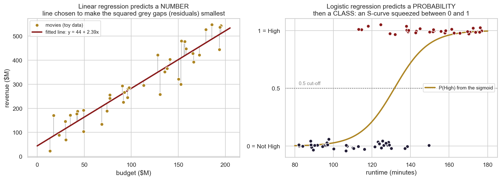
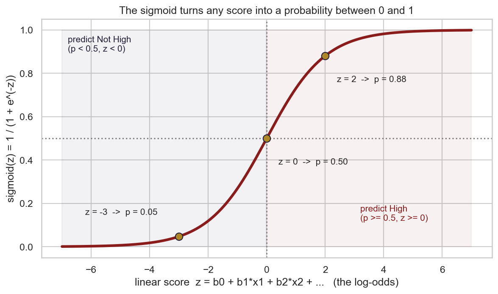
How the two differ
| Linear regression | Logistic regression | |
|---|---|---|
| Predicts | A number (revenue in $M) | A probability, then a class (High or Not High) |
| Output range | Any number, even a negative one | Between 0 and 1 |
| How it's fit | Least squares (minimize squared residuals) | Maximum likelihood (minimize log loss) |
| A coefficient means | Change in y per 1-unit change in x | Change in the log-odds per 1-unit change in x. ecoef is the factor that multiplies the odds. |
| Graded with | RMSE, MAE, R² | Accuracy, confusion matrix, precision and recall |
The score z in logistic regression is the log-odds, meaning log(p / (1 − p)). That's what makes its coefficients readable. If a feature goes up by 1, the log-odds go up by its coefficient b, which means the odds get multiplied by eb. That number is the odds ratio. An odds ratio above 1 makes the class more likely, and one below 1 makes it less likely.
Data Prep
Both models are supervised, so every movie needs a known answer. I used the same features as
the Decision Trees tab. They're all things a studio knows before release: budget (in
$M), runtime, release year, release month, number of genres, number of spoken languages, an
is_english flag, an is_us flag, and one 0/1 column for each of the
18 genres. That makes 26 numeric features. Vote count and popularity are left out because
they're only known after release, so including them would leak the answer.
-
Linear regression needs a numeric target. I used
revenue_musd, which is worldwide box office revenue in millions of dollars. Movies with no revenue figure, or a placeholder value under $1M (TMDB sometimes stores things like "7"), are dropped from this model only. That leaves 1,325 training and 439 testing movies. -
Logistic regression needs a two-class label. I used
is_high_rated, which is 1 ifvote_averageis above 7.2 and 0 otherwise. That's exactly the "High" class from the Naive Bayes and Decision Trees tabs, with Low and Medium merged into "Not High". 646 of the 1,828 movies (35%) are High. - Scaling. Linear regression is fit on the raw units, so its coefficients read directly as "dollars per minute" and so on. For logistic regression, the six numeric columns are standardized (mean 0, standard deviation 1) because the solver works much better when features are on similar scales. The scaler is fit on the training set only. The 0/1 columns are left alone, so their odds ratios still mean "has this genre vs. doesn't".
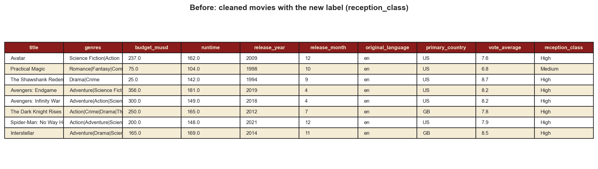
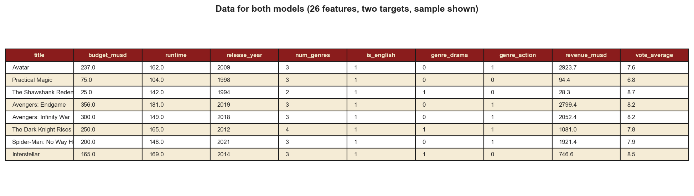
revenue_musd for linear regression and is_high_rated for logistic regression. Only some of the 26 feature columns fit in the picture.Training set and testing set
I reused the exact same stratified 75/25 split as the Naive Bayes and Decision Trees tabs. That's 1,371 movies for training and 457 for testing, chosen by movie id with a fixed random seed. Because it's the same split, logistic regression and Naive Bayes are graded on the same 457 movies. The models are fit only on the training set, and the testing set is used once at the end.
The two sets must be disjoint. A model can always do well on movies it has already seen. Linear regression can bend its coefficients to fit quirks of the training movies, and logistic regression can do the same with its probabilities. If any test movie were also in training, the test score would partly measure memory and not prediction, and it would look better than the model really is. The code checks that the two sets of ids don't overlap, and they don't.
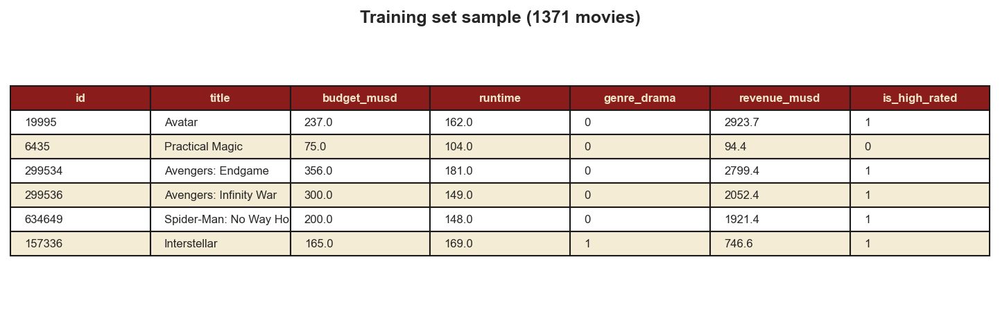
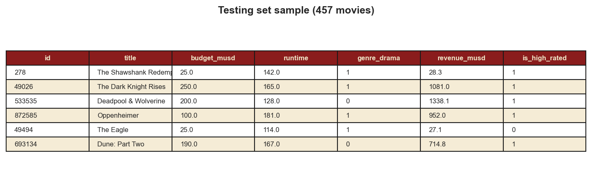
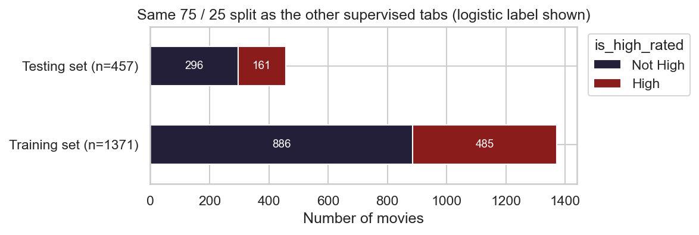
Code
Everything is in Python, using scikit-learn's LinearRegression,
LogisticRegression, StandardScaler and metrics, along with
pandas and matplotlib. The label and the split come from the shared
file that every supervised tab uses.
# linear regression: revenue in $M
lin = LinearRegression().fit(X_train, revenue_train)
pred = lin.predict(X_test)
rmse = mean_squared_error(revenue_test, pred) ** 0.5
r2 = r2_score(revenue_test, pred)
# logistic regression: is_high_rated (scale only the 6 numeric columns)
logit = make_pipeline(
ColumnTransformer([("scale", StandardScaler(), NUMERIC)], remainder="passthrough"),
LogisticRegression(max_iter=5000))
logit.fit(X_train, high_train)
print(accuracy_score(high_test, logit.predict(X_test)))
odds_ratios = np.exp(logit[-1].coef_[0])Results
Linear regression: predicting box office revenue
| Model | Test RMSE | Test MAE | Test R² | Train R² |
|---|---|---|---|---|
| Linear regression (26 features) | $224M | $140M | 0.42 | 0.50 |
| Baseline: always predict the training mean ($252M) | $295M | $198M | 0.00 |
On the 439 test movies, the model explains 42% of the variation in revenue (R² = 0.42). It cuts the typical error (MAE) from $198M to $140M compared with just guessing the average. The training R² is only a bit higher (0.50), so it isn't badly overfitting. The RMSE ($224M) is much bigger than the MAE because RMSE squares the errors, and a few blockbusters are missed by a billion dollars or more.
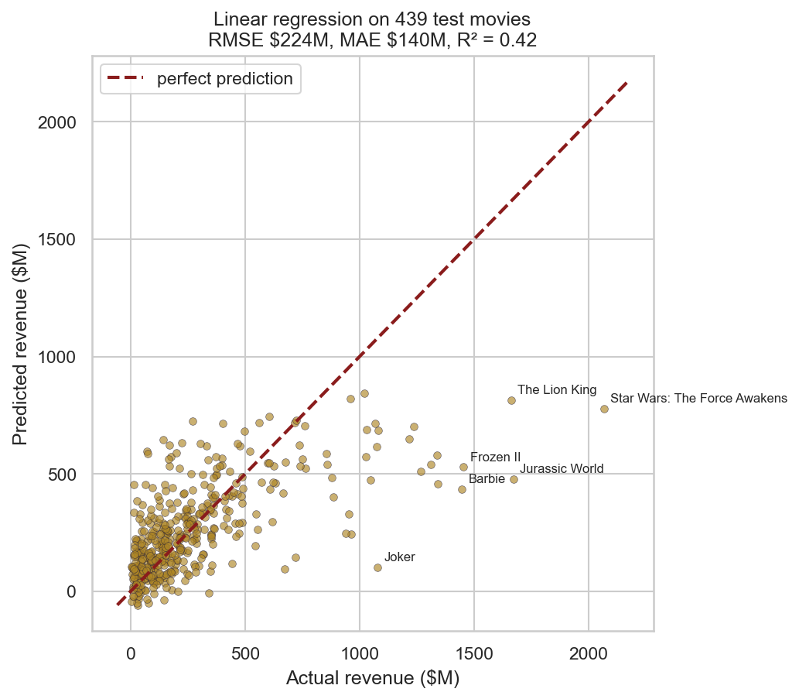
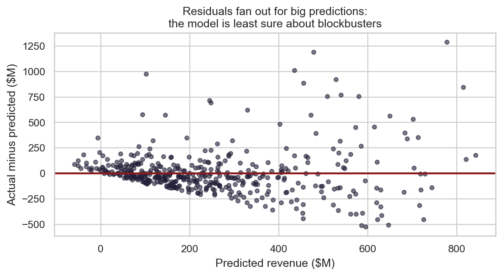
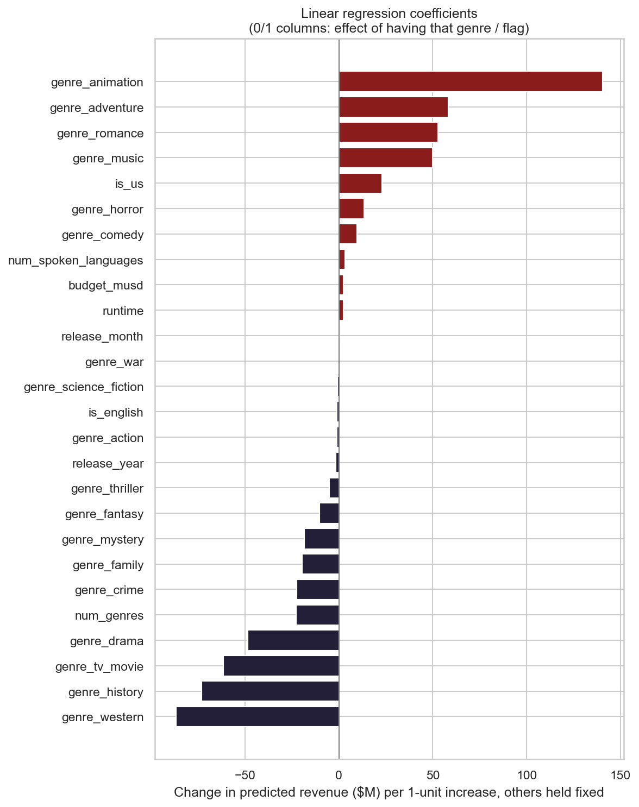
Two coefficients in plain words:
- budget_musd = +2.52. If two movies are the same in every other way, the one with $1M more budget is predicted to earn about $2.52M more at the box office. So on average every budget dollar comes back about 2.5 times in gross revenue (before marketing costs and the theaters' cut). Budget is the main driver of this model.
- genre_animation = +140.4. At the same budget, runtime, year and so on, an animated movie is predicted to earn about $140M more than a non-animated one. Family audiences and repeat viewing make animation the most bankable genre.
For contrast, genre_drama = −48.4. Being a drama lowers predicted revenue by about $48M. And runtime = +2.41, so each extra minute adds about $2.4M, which mostly reflects that long movies tend to be big event films.
Logistic regression: predicting a High rating
On the 457 test movies, logistic regression was right 75.5% of the time (training: 75.3%). The baseline of always guessing "Not High" gets 64.8%, so the model adds about 11 points. It's careful about calling a movie High. When it does, it's right 74% of the time (precision), but it only finds 47% of the truly High movies (recall). Many High movies get probabilities below 0.5.
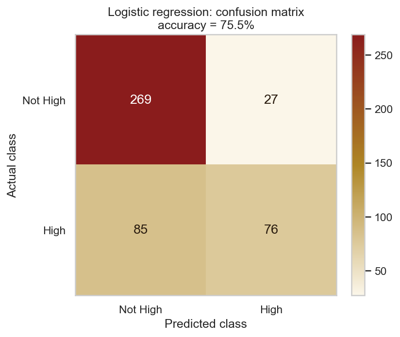
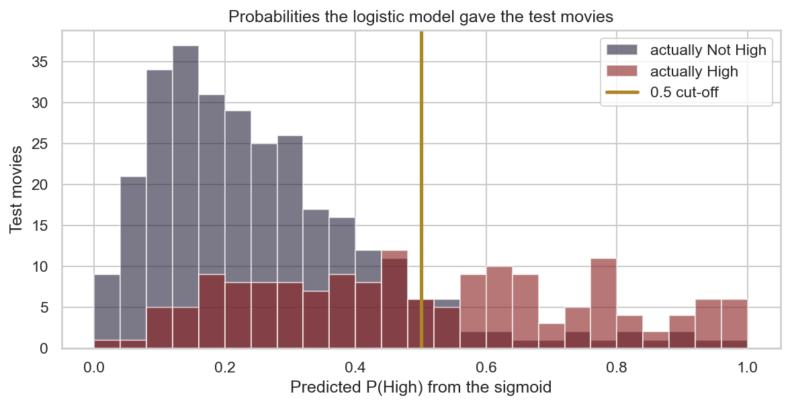
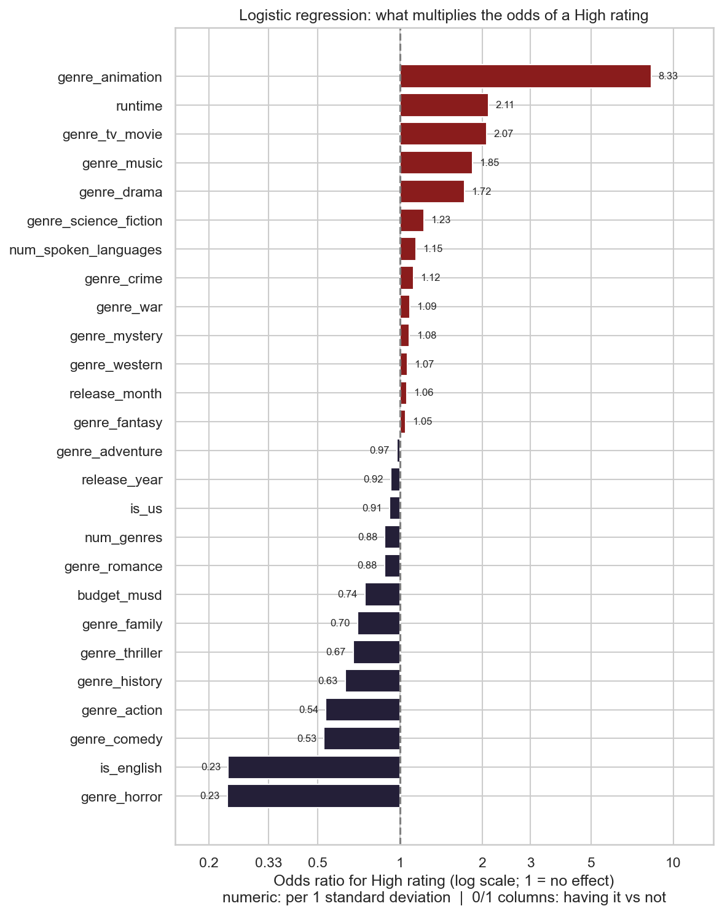
What the coefficients mean for the odds:
- genre_animation: coefficient 2.12, odds ratio 8.3. Keeping everything else the same, being animated multiplies the odds of a High rating by about 8. For example, a movie with even odds (1 to 1, so p = 0.5) would go to about 8 to 1 (p ≈ 0.89) just by being animated.
- runtime: odds ratio 2.1 per standard deviation. One standard deviation is 21.7 minutes, so a movie about 22 minutes longer has roughly twice the odds of being High.
- genre_horror and is_english: odds ratio 0.23. Each one cuts the odds to about a quarter. The English effect is a selection effect. The non-English films that make it into a popularity-sorted TMDB sample are mostly acclaimed imports (Studio Ghibli, Parasite and so on), so "not English" ends up meaning "already recognized as great". In my data, 80% of the non-English films are High, compared with 32% of the English ones.
- budget: odds ratio 0.74 per $66M. More money slightly lowers the odds of a High rating, even though linear regression shows it strongly raises revenue.
Logistic regression vs. Naive Bayes
The Naive Bayes model from Part 3 predicted three classes (Low, Medium, High) and got 57.8%. You can't compare that directly to a two-class score. To make it fair, I retrained the same Multinomial Naive Bayes, with its own banded 0/1 features from the Naive Bayes tab, on the same two-class label and the same split.
| Model (High vs. Not High, same 457 test movies) | Accuracy | Precision (High) | Recall (High) |
|---|---|---|---|
| Baseline: always Not High | 64.8% | 0% | |
| Logistic regression | 75.5% | 73.8% | 47.2% |
| Multinomial Naive Bayes | 77.0% | 75.5% | 51.6% |
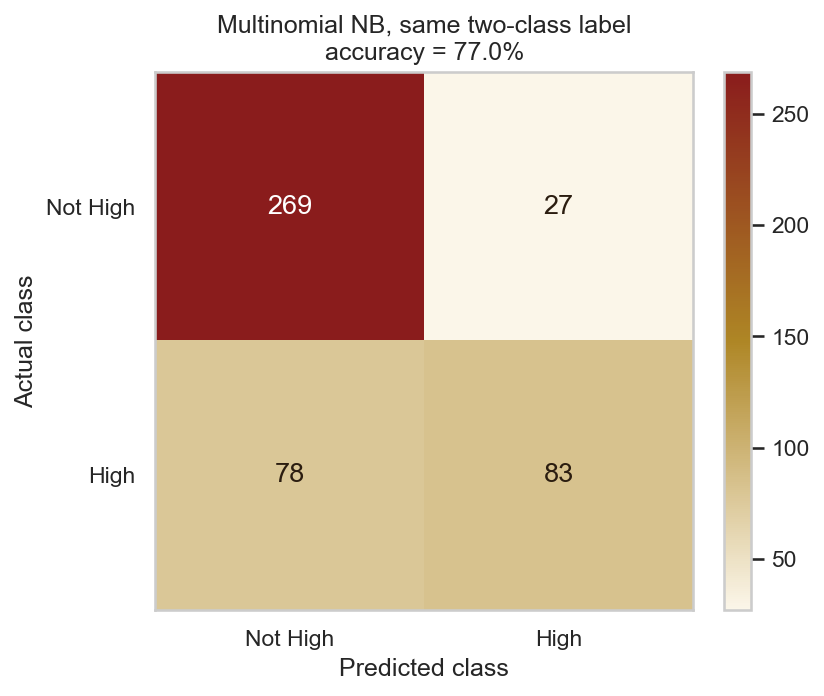
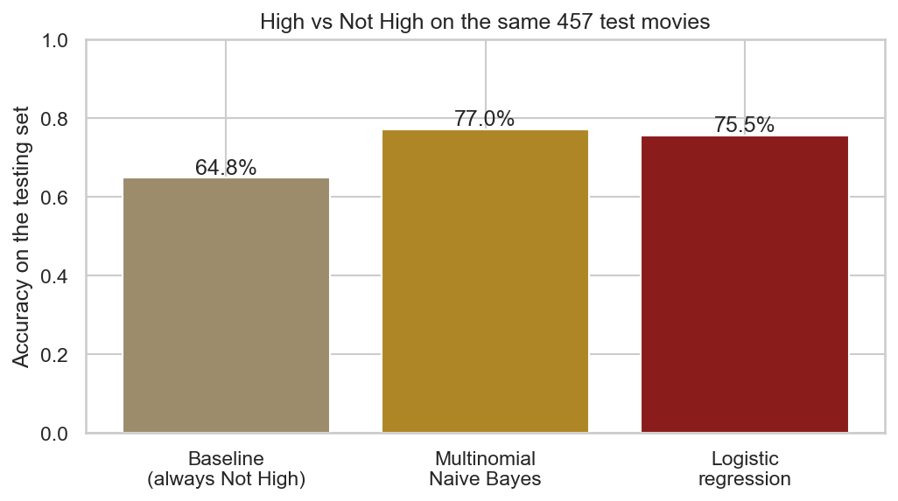
Naive Bayes edges out logistic regression by 1.5 points (7 more correct movies out of 457). That's a very small gap. Both are linear models in the end, since Naive Bayes also adds up one weight per feature, and here they mostly make the same mistakes. Naive Bayes probably gets a small boost from its banded features. Its runtime and budget bands let it say "140+ minutes is very different from 120 to 139" without forcing a straight line, while logistic regression treats each extra minute the same. Logistic regression's advantage is that its coefficients are easy to read as odds ratios, and it gives better-calibrated probabilities, because it doesn't assume the features are independent.
Conclusions
The two regressions answer the two halves of my question, commercial success and critical success. They point in different directions.
- Money predicts money. Using only what's known before release, I can predict a movie's box office to within about $140M on average and explain 42% of the variation. Budget does most of the work: each extra $1M of budget comes with about $2.5M more revenue. Animation and adventure add a lot on top of that, and drama, history and westerns subtract.
- Money doesn't predict acclaim. In the rating model, budget points the other way. Bigger budgets come with slightly lower odds of a High rating. The things that raise the odds are animation (8 times the odds), longer runtimes and drama. The things that lower them are horror, comedy and action. This matches what the trees and clustering found: cheaper, longer, serious films rate well, and expensive spectacle earns money without earning top scores.
- The biggest hits can't be predicted. The linear model underestimates all 19 billion-dollar movies in the testing set. Whatever turns a solid release into a phenomenon (franchise hype, cultural moment, word of mouth) isn't in pre-release data like budget, runtime and genre.
- "Will it be highly rated?" is about 75% predictable from genre, runtime, language and budget alone. That's well above guessing, but the model still misses half of the truly great films. A lot of what makes a movie great is the craft itself, which these features can't measure.